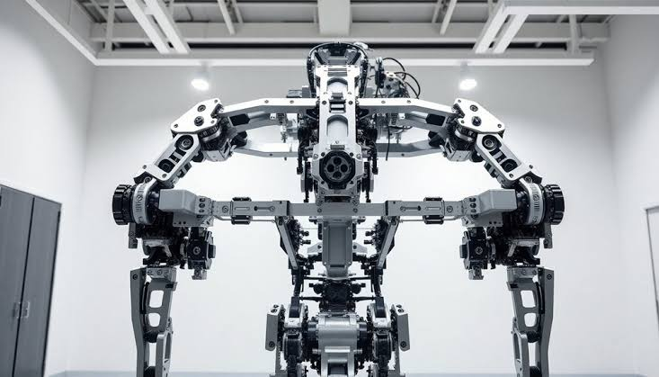
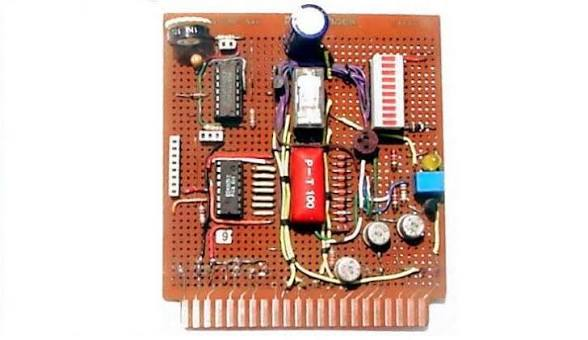
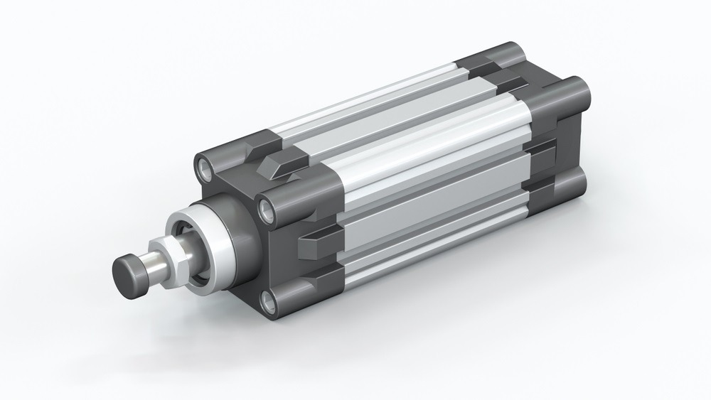
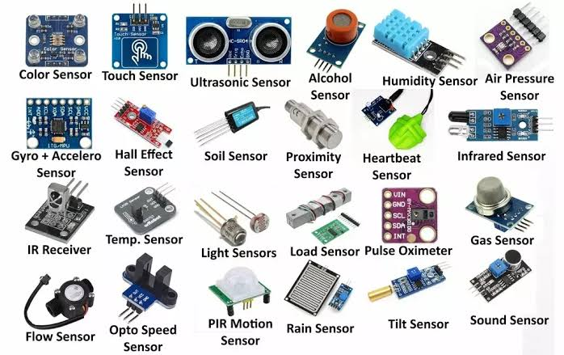
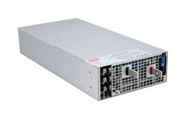

Basic structure of a robot
Overview
Every robot, from a factory arm to a Mars rover, is built from five main parts that work together. The mechanical frame gives it a body, the control system decides what to do, actuators make it move, sensors tell it about the world, and the power supply keeps everything running.
Together they form one loop: sense the world, think about what to do, then act. The faster and more accurate this loop is, the more capable the robot.
1Mechanical frame (links and joints)

A robotic system often consists of many parts, each having at least a body frame with the origin at the center of the rigid shape of the part, and axes pointing to some orthogonal directions. It allows measurements in the perspective of the part. The body frame for the base of a robot is often called base link. It is one of the most important frames in a robot as measurements in this frame describe how the robot as a whole sees the world
2Control system (the brain)

Every autonomous robot relies on a central processing architecture—its "brain"—to bridge the physical and digital worlds. Rather than just executing hardcoded instructions, a modern robotic brain continuously processes noisy sensor inputs, updates its internal representation of the environment, and generates precise physical movements in real time.
3Actuators (the muscles)

A device that moves or operates something is called an actuator. When an actuator receives a portion of the input energy as a feedback control signal, the actuator starts moving the machine part. In other terms, an actuator transforms energy into mechanical or physical motion. Actuators are used in a wide range of industries, such as manufacturing, aerospace, automotive, robotics, and home automation, to perform important functions, such as opening and closing valves, moving robotic arms, adjusting control surfaces, or actuating brakes.
4Sensors (the senses)

Sensors are tools that turn changes in the environment, chemicals, or physical objects into signals that can be measured. They act like bridges between the real world and digital systems, letting machines see what's going on and respond. Sensors are a big part of modern technology, from smartphones to industrial automation. They ensure that things work the way we expect them to by keeping them accurate, efficient, and smart.
5Power supply (energy source)

Every machines require power to operate effectively, and robots are not an exceptional. They also need power to provide the voltage signals that make the motors turn, the sensors operate and the robot brain to operate. The simplest way of doing so is to use batteries. Lithium Polymer (LiPo) and Lithium Iron Phosphate (LiFePO4) are widely used in mobile robots due to their high energy density and discharge rates.
SUMMARY
- A modern robot is far more than an isolated assembly of mechanical parts and software; it is a tightly integrated mechatronic system driven by a continuous Sense-Think-Act loop. In this architecture, the Mechanical Frame establishes the physical structure and kinematic workspace, while Sensors act as digital senses to convert physical phenomena into actionable environmental data. The Control System serves as the central brain, executing complex algorithms to filter noise, estimate states, and make split-second decisions. These digital commands are then translated into physical movement by Actuators—the muscles of the machine—all while a regulated Power Supply acts as the lifeblood sustaining continuous operation. Mastering robotics engineering ultimately relies on optimizing the seamless synergy among these five core pillars as Embodied AI and physical hardware continue to evolve.